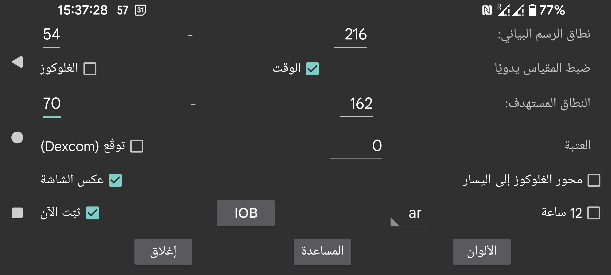

غيّر ألوان المنحنيات والقراءات والكميات. وللتبديل إلى الوضع الداكن استخدم القائمة الوسطى اليمنى->الوضع الداكن.
أدخل قيمة منخفضة وقيمة مرتفعة بحيث يقابل أسفل الشاشة أدنى قيمة ويقابل أعلاها أعلى قيمة. ولا تُستخدم هذه القيم إلا عندما تكون جميع قيم الغلوكوز المعروضة على الشاشة ضمن هذا النطاق. وإلا فسيُوسَّع النطاق لكي تظهر كل القيم. فإذا أدخلت 3 mmol/L (54 mg/dL) و9 mmol/L (162 mg/dL)، وكانت كل القيم الظاهرة على الشاشة بين 5 mmol/L و6 mmol/L، فسيعرض الرسم البياني محور غلوكوز من 3 إلى 9.
إذا كان خيار الضبط اليدوي لمقياس الغلوكوز مفعّلًا، فيمكنك تغيير ذلك: فالتحريك بإصبعك فوق الجزء العلوي من الشاشة يحرّك النصف العلوي من الرسم صعودًا وهبوطًا، والتحريك فوق الجزء السفلي من الشاشة يحرّك النصف السفلي صعودًا وهبوطًا.
يُلوَّن الجانب الأعلى من العرض بلون مختلف لتسهيل رؤية القيم المرتفعة. وينطبق الأمر نفسه على القيم المنخفضة. ويُعرض خط أحمر لبيان الجانب المنخفض أكثر من اللازم في العرض.
ضع أرقام مستوى الغلوكوز في الرسم البياني على يسار الشاشة. وهذا مفيد إذا كنت تريد وضع قيمة الغلوكوز الحالية في وسط الشاشة، مثلًا في Wear OS.
طبّق عتبة على معدل تغير قيم الغلوكوز. فعندما يبتعد معدل التغير عن الصفر بالمقدار المحدد فقط، يصبح سهم معدل التغير مختلفًا عن الوضع الأفقي. يمكنك استخدام أي قيمة بين 0 و0.8. وتُستخدم العتبة لمنع إعطاء معنى أكبر من اللازم لقيم التغير الصغيرة جدًا. فمن الممكن جدًا أن يبدو معدل التغير وكأنه يدل على ارتفاع بطيء في الغلوكوز بينما يكون الغلوكوز في الواقع في انخفاض. وتُستخدم العتبة لإعطاء حكم أكثر حذرًا.
ترسل مستشعرات Dexcom مع كل قيمة فعلية قيمة متوقعة أيضًا. بحثت عنها في Google لكنني لم أجد مرجعًا يشرحها. وكل ما وجدته هو أن Dexcom كانت تدعم تنبيهًا يتنبأ بانخفاض الغلوكوز حتى 20 دقيقة مقدمًا، انظر https://www.dexcom.com/g7/how-it-works#alerts
عندما وضعت هذه القيم بعد 20 دقيقة في المستقبل، لم تتطابق النتائج جيدًا. لكنها بدت أفضل بكثير عندما وضعتها بعد 10 دقائق في المستقبل.
عند تشغيل هذا الخيار، تُعرض هذه القيم المتوقعة بالطريقة نفسها التي تُعرض بها قيم السجل الخاصة بمستشعرات Libre في Juggluco. ويمكنك أيضًا إيقافها بإلغاء تحديد القائمة الوسطى اليمنى→السجل. وفي Juggluco لا تُستخدم هذه القيم للتنبيهات؛ يمكنك فقط عرضها للحكم على مدى جودة التنبؤ.
يقلب العرض رأسًا على عقب. وهو مفعّل افتراضيًا، لأنه لولا ذلك لكنت أحيانًا ألمس OK بالخطأ أثناء مسح المستشعر.
يطلب بعض الأشخاص وضع العرض العمودي، لكنني أوقفت ذلك لأنه غير مناسب إطلاقًا لعرض الرسم البياني للغلوكوز.
IOB هو مقياس لكمية الإنسولين المتبقية من الجرعات السابقة. ولأجل ذلك يجب أن تُدخل جرعات الإنسولين تحت تسمية ضمن فئة “الإنسولين سريع المفعول”. ويمكنك تحديد التسميات التي تُعد “الإنسولين سريع المفعول” عبر القائمة اليسرى→الإعدادات→تبادل البيانات→خادم الويب→إعطاء الكميات.
عندما يكون خيار “ثبّت الآن” مفعّلًا، تُحرَّك الفترة الزمنية المعروضة على الشاشة إلى اليسار بحيث يبقى الوقت الحالي دائمًا في الموضع نفسه من الشاشة. بعض المستخدمين يشغّلون Juggluco على محاكي Android على جهاز كمبيوتر يبعد عنهم بضعة أمتار. وعندما يكون “ثبّت الآن” معطّلًا، فإن موضع قيمة الغلوكوز الحالية يتحرك إلى اليمين مع مرور الوقت، بحيث لا يعود مرئيًا بعد بضع ساعات. وهذا يضطر المستخدم إلى الذهاب إلى الكمبيوتر وتمرير الشاشة بضعة سنتيمترات. وعند تشغيل “ثبّت الآن” لا تعود هناك حاجة إلى هذا الإزعاج.
يُعرض Juggluco باللغة المختارة. وإذا لم يُحدَّد رمز لغة، فستُستخدم لغة النظام.